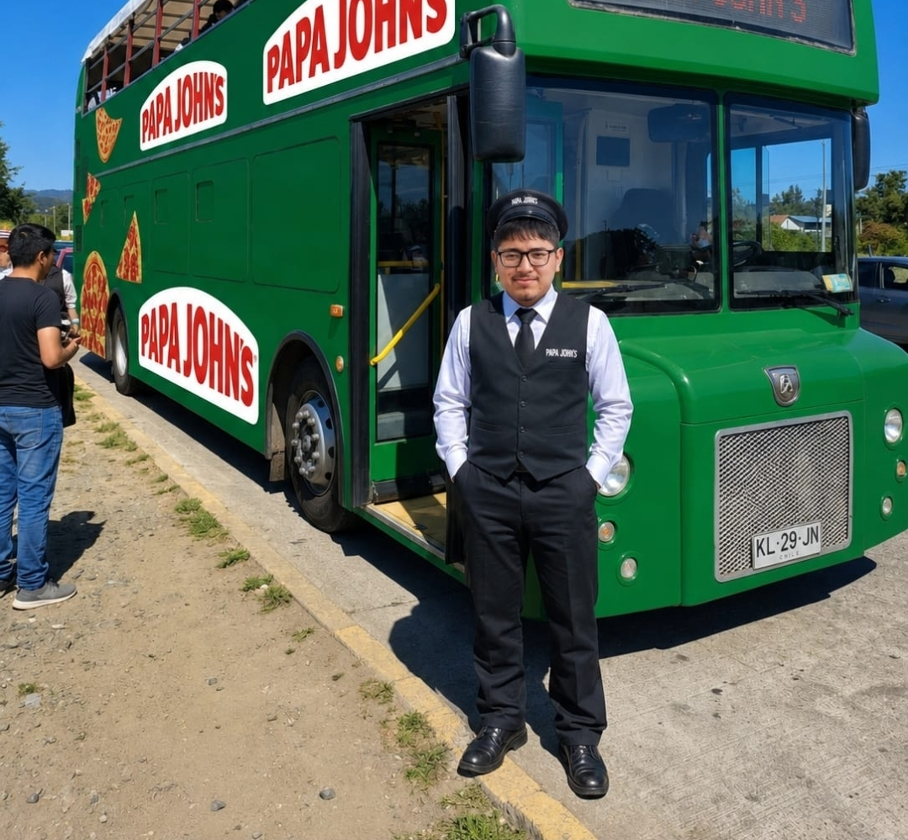

¿Qué es PapaRuta?

PapaRuta Los Lagos es una plataforma turística que invita a descubrir locales de Papa John’s en la Región de Los Lagos como puntos de encuentro para viajeros, estudiantes y familias.
Explora, fotografía y comparte
Nos complace ayudar a familias a encontrar su lugar y ser uno con Papa John's

Información de choferes
Nuestros choferes son los encargados de conectar cada punto de la PapaRuta Los Lagos. Desde la Base de Operaciones Luinux en Los Notros, acompañan los recorridos hacia distintos locales destacados de la región, llegando a los confines más apartados del mundo (Chiloé).

John Papayón
Chofer oficial de PapaRuta Los Lagos. Experto en rutas gastronómicas, degustación de picsas y expediciones hacia el sur.
Acerca de PapaRuta Los Lagos
PapaRuta Los Lagos es una plataforma de turismo gastronómico con temática principal de Papa John's. El sitio presenta los locales de Papa John's como puntos de interés en toda la región de Los Lagos. Además, tiene un apartado para conocer al chofer y saber más sobre las rutas disponibles.